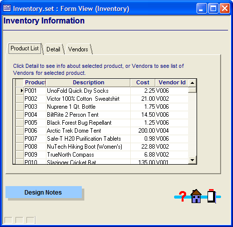

Zoom to Record
If a form has an embedded browse, you can use the Zoom to Record command to switch to a user-selected form to display more detail on the current record in the embedded browse.

A Tabbed Form with an Embedded Browse
To use the Zoom to Record command:
Give focus to the embedded browse by clicking on one of the records in the browse.
From the Form menu, select Zoom to Record.
In the Select Form to open dialog, select the form you want to view.
By default, the form will open as a modeless dialog box. To display the form as a modal dialog box, check the Open as Dialog option.
Click OK to open the form.